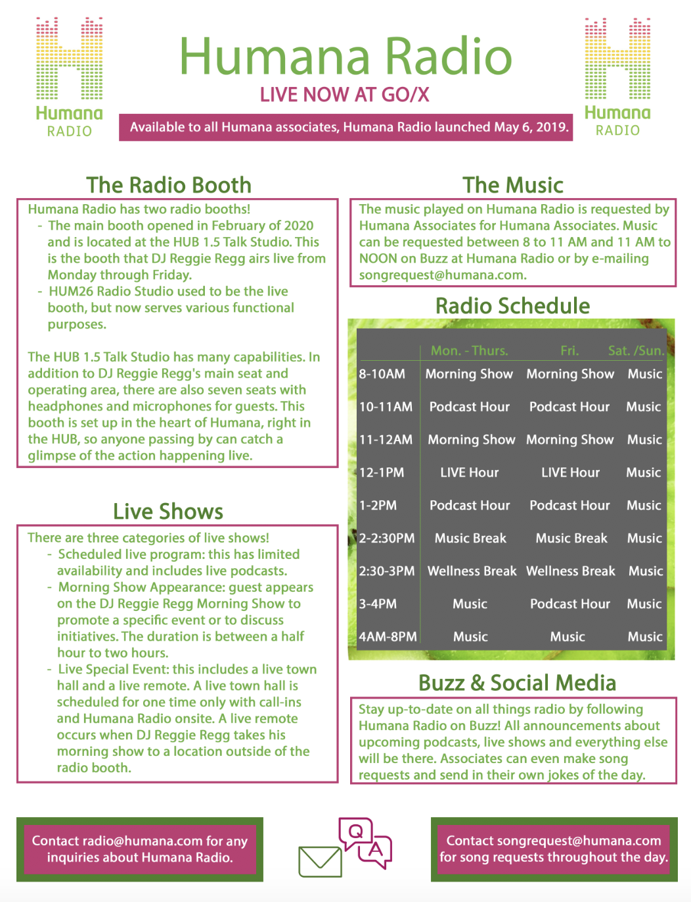

Here are a few of my published works from previous jobs, internships and classes!
KBIAFor Humana Radio, I produced a daily segment called "Hi! Highlights". These were all between 1:30 and 2 seconds, being played throughout the day on the radio station. Click on the linked dates to listen to just a few examples: July 31, August 27 and September 3.
I also created a 5-page "playbook" of the radio station's processes. I used Adobe Photoshop to create the playbook. Here is what the first page looks like:

Possibly have Global Journalist example here.
I currently work as a dayturn editor and producer of the True/False podcast for KBIA. Click on the linked titles to listen to the 20-minute podcast episodes I contributed to: 'Objectivity' with Elegance Bratton and Retaining Humanity with David France and Maxim Lapunov.
Another story that I've worked on was for the municipal elections in Missouri.
I have created two multimedia packages for The Global Journalist. For both stories, I contributed to writing the audio scripts and editing the audio pieces.
The first story discusses accessibility in newsrooms. Specifically, it focuses on assistive technology and journalists' experiences with technology. Click here to listen to the audio story.
The second story covers the #EndSARS protests in Nigeria. I interviewed an award-winning radio host, Kofi Bartels, and was able to make a connection to the BLM protests in the U.S. Click here to listen to the audio story.